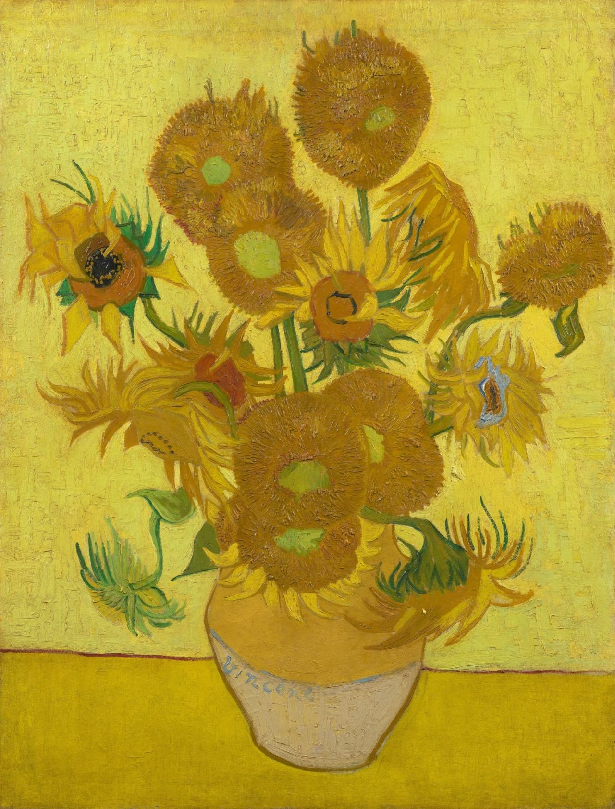
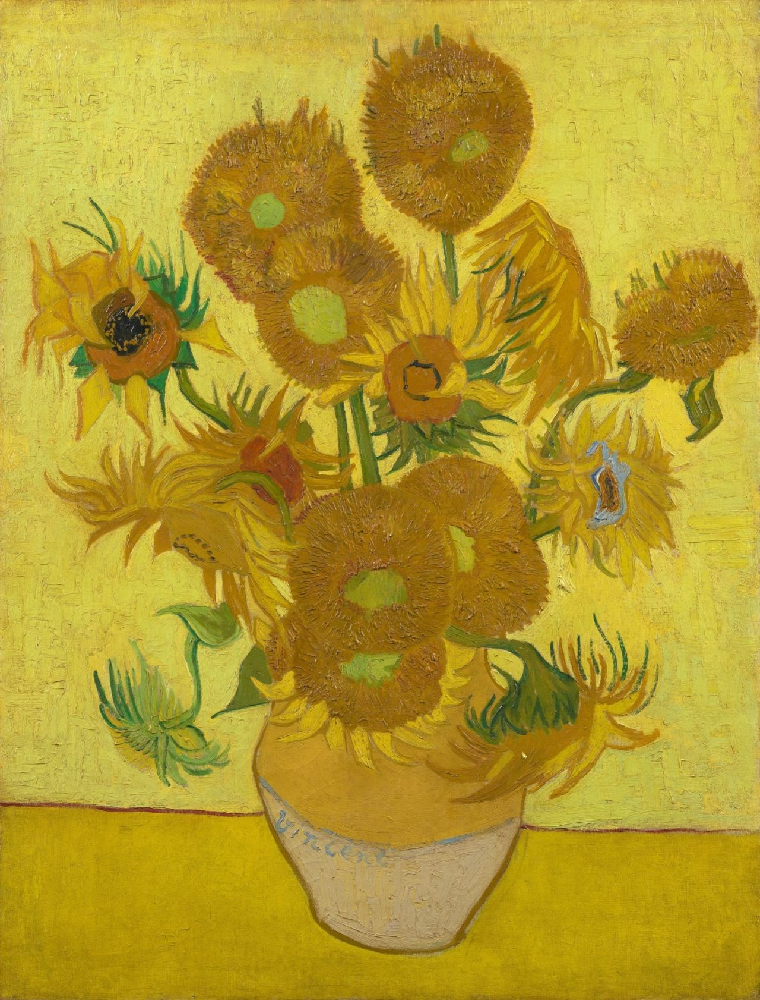

“Os girassóis de Van Gogh-Manoel de Barros”
“Hoje eu vi
Soldados cantando por estradas de sangue
Frescura de manhãs em olhos de crianças
Mulheres mastigando as esperanças mortas
Hoje eu vi homens ao crepúsculo
Recebendo o amor no peito.
Hoje eu vi homens recebendo a guerra
Recebendo o pranto como balas no peito.
Eu vi os girassóis ardentes de Van Gogh.”